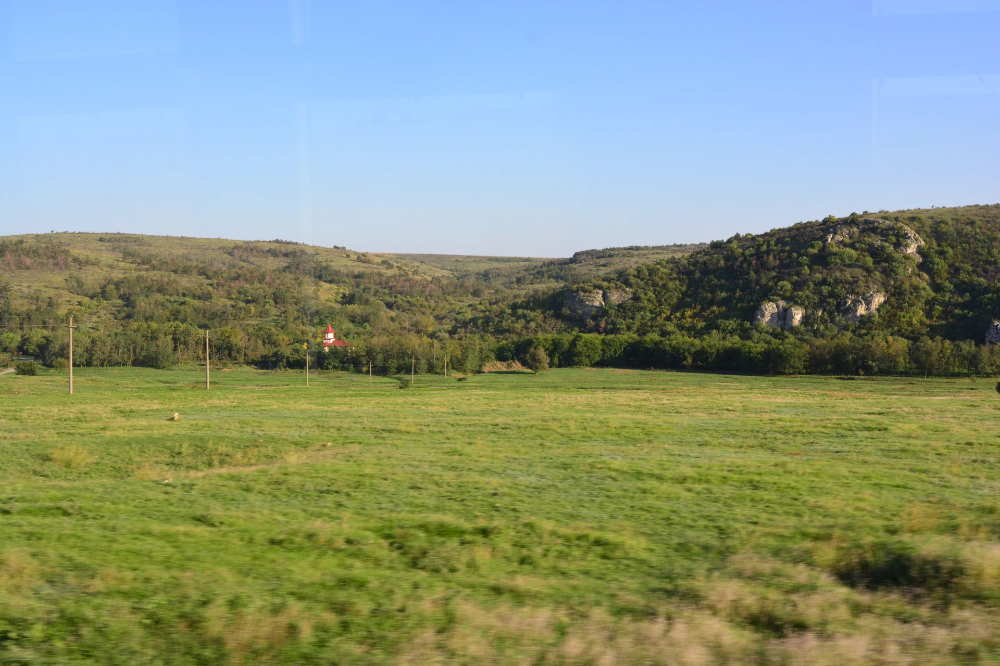
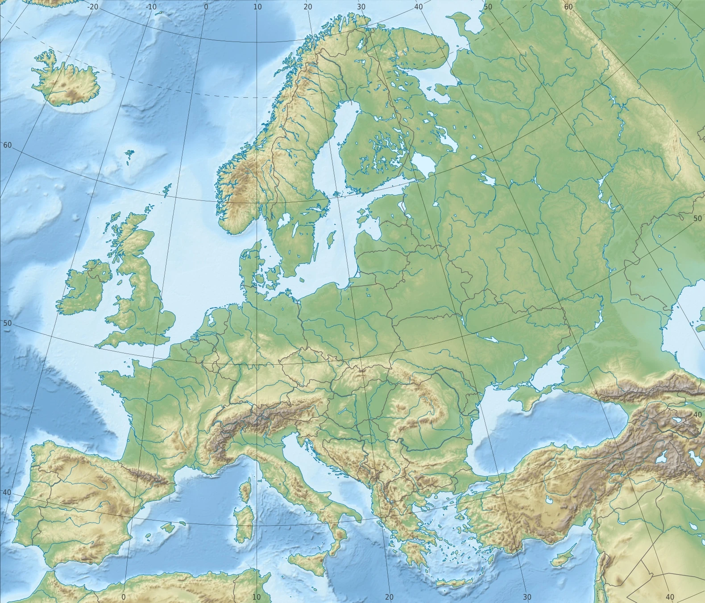
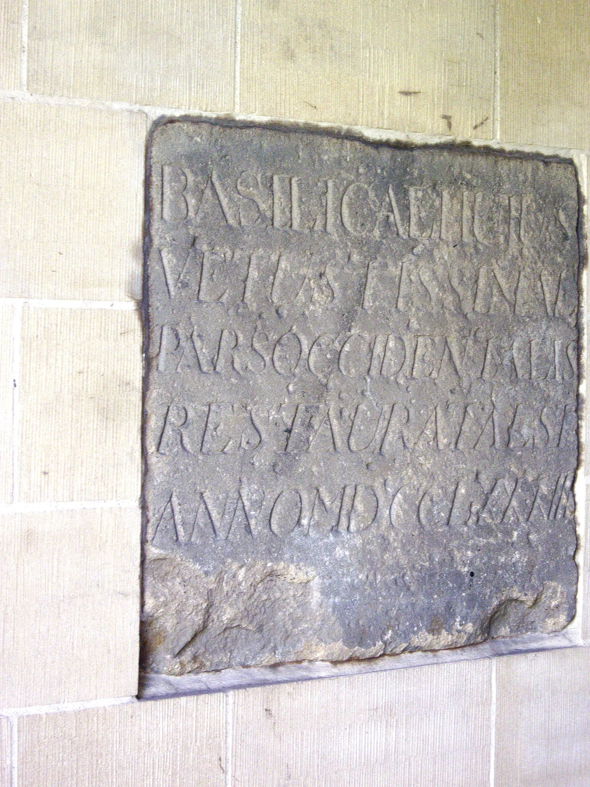
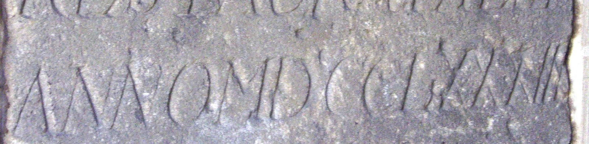

아직 펼치지 않은 카드매일 쓰는 말에 숨은 성경 · 4달력 속 기독교우리가 쓰는 ‘2026년’이라는 숫자는 언제, 누가 세기 시작했을까요?올해가 2026년인 건 누가 정했을까?
525년 · 731년 무렵 · 1962년로마 · 잉글랜드 재로 · 대한민국
달력 속 기독교
525년 로마의 수도사 디오니시우스는 새 부활절 표(부활절 날짜를 미리 셈해 둔 표)의 해를, 박해자 황제의 해 대신 ‘우리 주 예수 그리스도의 성육신부터’ 세었어요. 그 셈은 잉글랜드 북쪽 재로 수도원의 수도사 베다를 거쳐 널리 퍼졌고, 우리 달력의 ‘2026’도 그 셈을 따른 숫자예요. 지도 위에서 그 셈이 건너간 길을 따라가 보세요.
올해가 2026년인 건 옛날 한 수도사가 해를 세는 법을 정해서래. 그 셈이 어디까지 갔는지 지도에서 따라가 볼까?
검수 전 시안이에요(기준서 1판). 장면에는 기록에 있는 것만 옮겼고, 기록마다 다른 것은 그렇다고 밝혔어요. 상상은 ‘눈 감고 상상해 보기’에만 썼어요.
시안 확인용카드 단계 미리 보기
1
박해자의 해 대신
525년 로마. 수도사 디오니시우스는 해마다 날짜가 바뀌는 부활절을 미리 셈해 둔 표를, 95년 앞까지 이어 새로 만들었어요. 그때까지 쓰던 표는 해를 디오클레티아누스 황제가 다스리기 시작한 때부터 셌어요. 디오클레티아누스는 수도사 디오니시우스와 이름이 비슷하지만, 그보다 240년쯤 앞서 284년에 황제가 된 사람이에요.
디오니시우스는 표와 함께 보낸 편지에 왜 그 셈을 버리는지 적었어요.
“불경한 사람이자 박해자인 그의 기억을 우리 표에 묶어 두고 싶지 않아서, 차라리 우리 주 예수 그리스도의 성육신부터 해를 세기로 했습니다.”
디오니시우스가 페트로니우스 주교에게 보낸 편지 · 로저 피어스의 영어 번역을 이 안내서가 옮김
성육신은 하나님의 아들이 사람이 되었다는 뜻으로, 그리스도인들이 믿는 일이에요. 가톨릭 백과사전에 따르면 디오니시우스는 그때를 로마가 세워진 지 754년 되는 해의 3월 25일로 보았어요.
친구 카시오도루스는 그를 ‘태어나기는 스키티아 사람이지만, 마음은 참 로마 사람’이라고 적었어요. 로마 때 ‘작은 스키티아’라고 부른 곳이 지금의 도브루자 지방이에요. 위 사진은 루마니아 도브루자 지방, 그의 이름을 딴 수도원 쪽 들판이에요.
옛날 수도사가 부활절 날짜표를 만들면서, 그리스도인을 괴롭힌 황제 대신 예수님을 기준으로 해를 세기로 했대.
물어보기너라면 해를 무엇부터 세고 싶어?
2
셈이 건너간 길
디오니시우스의 셈은 부활절 표에 담겨 있었어요. 그 셈이 로마를 떠나 바다 건너 잉글랜드 북쪽까지 이른 길을 지도 위에서 따라가 보세요.
‘다음 곳으로’를 누를 때마다 길이 한 구간씩 이어지고, 그곳의 이야기가 열려요.
‘다음 곳으로’를 눌러 셈이 건너간 길을 따라가 보세요.

스키티아로마재로유럽 지형 지도(경도·위도 선이 그어진 지도) · 지도: Alexrk2 · CC BY-SA 3.0 · 위키미디어 공용
스키티아에서 로마를 거쳐 잉글랜드 북쪽까지, 한 수도사의 셈이 바다를 건넜어요.
디오니시우스와 베다 사이에는 200년이 있어요. 베다는 로마에서 멀리 떨어진 북쪽 바닷가 수도원에서, 그 셈으로 잉글랜드의 역사를 적었어요.
수도사의 셈법이 로마에서 바다 건너 영국까지 갔어!
물어보기지도에서 이탈리아 장화 모양을 찾아볼까? 로마는 그 가운데쯤이야.
3
왕의 해로 새긴 돌
잉글랜드 북쪽 재로의 성 바오로 교회에는 685년 4월 23일 이 교회를 봉헌한(새 교회를 하나님께 바친) 일을 새긴 돌이 남아 있어요. 잉글랜드에 남은 교회 봉헌석 가운데 가장 오래된 것이에요. 그 돌은 해를 ‘에그프리스 왕 15년, 체올프리스 원장 4년’이라고 적었어요.
베다는 685년 무렵 이 새 수도원으로 옮겨 와, 735년 이곳에서 세상을 떠났어요. 그리고 731년 무렵 마친 역사책에서는 해를 ‘주님의 해’로 셌어요.

사진의 돌은 그 봉헌석이 아니에요. 처음엔 ‘원래 봉헌석’이라는 이름으로 올라왔지만, 위키미디어 공용의 설명대로 1783년에 교회를 고쳐 지은 일을 새긴 돌이에요. 마지막 줄 끝의 로마 숫자가 1783이에요.
한 교회 안에, 왕의 햇수로 적은 돌과 주님의 해로 적은 돌이 함께 있는 셈이에요. 아래에서 731년 베다의 자리에 앉아 골라 보세요.
731년 재로의 베다라면, 역사책의 해를 무엇으로 셀까요?
옛날에는 ‘왕이 다스린 지 15년째’처럼 해를 셌대. 왕이 바뀌면 다시 1년부터!
물어보기돌 맨 아래 줄의 로마 숫자, 무슨 해일까? 뒷이야기에 푸는 법이 있어.
4
서기 1962
1582년 교황 그레고리오 13세는 달력을 고쳤어요. 그 무렵 춘분은 달력 위에서 3월 11일까지 앞당겨져 있었어요. 춘분을 다시 3월 21일로 맞추려고 1582년 10월 4일 다음 날을 10월 15일로 했고, 100으로 나누어떨어지는 해는 400으로도 나누어떨어질 때만 윤년으로 두었어요. 오늘 널리 쓰는 양력이에요.
조선은 1895년 9월 9일 이 태양력을 쓰기로 했어요. 고종은 음력 개국 504년 11월 17일을 505년 1월 1일로 삼으라고 명했고, 그날이 양력 1896년 1월 1일이 되었어요(『고종실록』 고종 32년 9월 9일).
“대한민국의 공용연호는 서력기원으로 한다.”
「연호에 관한 법률」, 1961년 12월 2일 공포 · 국가기록원
연호는 해를 세는 법을 말해요. 1948년의 「연호에 관한 법률」은 단군기원(단기)을 나라의 연호로 삼았어요. 1961년에 새로 공포한 법은 공용 연호를 서력기원으로 바꾸어 1962년 1월 1일부터 시행했고, 그 전 공문서의 단기 연도는 2,333을 빼서 서기로 보게 했어요.
서력기원(서기)은 예수가 태어난 해로 본 해를 1년으로 세는 셈, 곧 디오니시우스의 ‘주님의 해’예요. 그래서 우리 달력의 ‘2026’은, 525년 로마의 한 수도사가 정한 셈을 따라 센 숫자예요.
우리나라는 1962년부터 나라 문서에 ‘서기’를 쓰기 시작했대.
물어보기올해는 단기로 몇 년일까? 2026에 2333을 더해 볼까?
눈 감고 상상해 보기
731년 무렵, 잉글랜드 북쪽 바닷가 수도원의 작은 방을 떠올려 보세요. 등잔 하나, 양피지 한 장. 베다가 깃펜에 잉크를 찍어 한 해 한 해 적어 나가요. “주님의 해 ….” 창밖에서 강바람이 불어요.
눈을 감아 봐. 깜깜한 수도원 방에서 할아버지 수도사가 깃펜으로 숫자를 쓰고 있어. 사각사각. 어떤 숫자일까?
나의 자리
디오니시우스는 무엇부터 셀지 골랐어요. 내 삶의 ‘원년’을 정한다면, 어떤 일부터 세고 싶나요?
너만의 달력을 만든다면, 무슨 일이 있었던 날을 1년으로 할래?
마음에 닿는 한 줄을 고르거나 직접 써 보세요. 한 줄을 남기면 이 자리의 도장이 찍혀요. 이 기기에만 저장돼요.
더 깊이
이야기를 보다 궁금해질 만한 것들이에요. 답을 읽거나 짧은 영화로 보세요.
부활절은 왜 해마다 날짜가 바뀌고, 표까지 만들어야 했어요?

그럼 2026은 예수님이 태어나시고 꼭 2026년째예요?
뒷이야기
아직 펼치지 않은 이야기예요. 누르면 이야기가 펼쳐지고 색이 돌아와요. 더 알고 싶으면 근거를 따라가 보세요.
다 펼치면, 다음에 오실 때 새 이야기가 찾아와요.
오늘의 뒷이야기는 여기까지예요. 다음에 오시면 새 이야기가 기다리고 있어요.
펼친 뒷이야기 · 누르면 다시 볼 수 있어요
더 찾아보기
기록마다 다른 점
사진 속 돌 이 사진은 영국 사진 모음 ‘지오그래프’에 ‘재로 성 바오로 교회의 원래 봉헌석’이라는 이름으로 올라왔고, 그 설명도 685년의 돌이라고 적어요. 위키미디어 공용의 설명은 685년 돌이 아니라 1783년에 교회를 고친 일을 새긴 돌이라고 바로잡았어요. 돌에 새긴 해도 1783년이라, 이 카드는 바로잡은 설명을 따랐어요.
베다가 역사책을 마친 해 브리태니커는 731/732년이라고 적어요. 그래서 이 카드는 ‘731년 무렵’이라고 썼어요.
직접 보기
확인한 날 · 2026년 11월 18일 · 바뀌기 쉬운 정보라 정기적으로 다시 확인해요
685년 봉헌석은 재로 성 바오로 교회 안, 성단 아치 위쪽 벽에 있어요(뉴캐슬 시 역사 환경 기록). 루마니아 도브루자에는 디오니시우스의 이름을 딴 수도원이 있어요.
찾아가실 때는 교회와 수도원의 여는 시간을 먼저 확인해 주세요.
셈이 건너간 길 금박
지도에서 스키티아를 떠나 로마를 지나 재로까지 길을 끝까지 따라가면 카드에 금박이 입혀져요.
스키티아에서 재로까지 길을 끝까지 따라가기
베다의 자리에서 채색
둘 가운데 하나만 해도 카드가 채색돼요.
731년 베다의 자리에서 해를 세는 법 하나 고르기
아이와 함께 ‘영화처럼 보기’를 끝까지 보기
근거 보기 (23)
- 터툴리언 프로젝트: 디오니시우스 『부활절에 관하여』 — 페트로니우스 주교에게 보낸 편지(로저 피어스 번역): 불경한 사람이자 박해자의 기억을 표에 묶지 않고 성육신부터 셈 · 마이클 데커스 번역의 해설: 프로부스 집정관 해, 525년
- 가톨릭 백과사전(뉴 어드벤트): Dionysius Exiguus — 스키티아 태생(카시오도루스), 로마에서 수도원을 이끔, 그리스어 책 번역, 그리스도 기원을 처음 씀, 성육신은 로마 건국 754년 3월 25일, 디오클레티아누스 기원을 대신함, 키릴로스의 표를 95년 이어감
- 브리태니커: Bede the Venerable — 672/673년 출생, 685년 무렵 재로의 성 바오로 수도원, 703년·725년 연대 책(부활절 셈), 731/732년 『잉글랜드 교회사』, AD 셈이 이 책들로 두루 쓰임, 735년 재로에서 세상을 떠남
- 뉴캐슬 시 역사 환경 기록 HER 1210: 재로 봉헌석 — 번역(에그프리스 왕 15년), 잉글랜드에 남은 가장 오래된 교회 봉헌, 1607년 첫 기록, 성단 아치 위 벽, 52.1×64.8cm 두 조각
- 케임브리지 대학 저장소: 우드먼 『Hagiography and Charters in Early Northumbria』 — 두 돌에 새김, 키로로 시작, 685년 4월 23일 봉헌
- 히깃(1979), The Dedication Inscription at Jarrow and its Context(앤티쿼리즈 저널) — 봉헌 글을 옮겨 적고 번역, 로마 대문자, 1782년에 헐린 교회(주석 25)
- 코큐레이트(뉴캐슬 대학): 스탠리 하우의 사진 설명 — ‘원래 봉헌석’, 685년이라고 적음(위키미디어 공용 설명과 다름)
- 브리태니커: Gregorian calendar — 1582년 그레고리오 13세, 10월 4일 다음 날을 10월 15일로, 춘분을 3월 21일로, 400으로 나누어떨어지는 세기 해만 윤년, 영국과 식민지는 1752년
- 국사편찬위원회 조선왕조실록: 『고종실록』 33권, 고종 32년(1895) 9월 9일 — 정삭을 고쳐 태양력을 쓰고 개국 504년 11월 17일을 505년 1월 1일로 삼음
- 한국민족문화대백과사전: 건양 — 1895년 9월 9일 태양력 채택, 음력 11월 17일을 양력 1896년 1월 1일로, 1895년 11월 15일 건양 연호, 독자 연호
- 국가기록원: 연호 — 1948년 9월 25일 「연호에 관한 법률」(단군기원), 1961년 12월 2일 공포 법률(서력기원), 1962년 1월 1일 시행, 단기에서 2,333년을 감함
- 미국 해군 천문대 FAQ: The Date of Easter — 3월 21일이나 그 뒤 첫 교회력 보름달 다음 첫 일요일, 3월 22일~4월 25일, 니케아 공의회(325)와 표
- 미국 해군 천문대 FAQ: The 21st Century and the 3rd Millennium — 0년이 없음(기원전 1년 다음 1년), 21세기는 2001년 1월 1일부터
- 브리태니커: Jesus — 기원전 6년과 헤롯이 죽은 기원전 4년 직전 사이에 태어남
- 브리태니커: Dionysius Exiguus — 그리스도교 달력을 만든 사람으로 여겨짐, 525년 교황 요한 1세의 부탁, 그리스도의 탄생 해를 잘못 셈
- 브리태니커: What did Diocletian do to Christians? — 303년 갈레리우스의 권유로 마지막 큰 박해, 교회를 허물고 제사를 거부한 그리스도인을 고문 · 처형
- 콥트 정교회 누리집: Pope Theona — 박해 때문에 디오클레티아누스가 황제가 된 284년을 콥트 달력의 첫해로, ‘순교자의 해’
- 타임앤데이트: The Coptic Calendar — 콥트 정교회가 축일을 정할 때 씀, 1년은 284년 8월 29일(율리우스력)
- 세계사 백과사전: The Origin & History of the BCE/CE Dating System — 알렉산드리아 교회는 디오클레티아누스(284년)부터 셈
- 브리태니커: Dobruja — 도나우강 아래쪽과 흑해 사이, 로마 때 ‘스키티아 미노르(작은 스키티아)’
- 위키미디어 공용: 도브루자 들판 사진 정보(2024년 9월 24일, 메지디아–툴체아 기찻길에서, 디오니시우스와 에프렘 수도원 분류)
- 위키미디어 공용: 유럽 지형 지도(람베르트 정적 방위도법, ETRS89-LAEA) — 지도 위 점은 경위도를 이 도법으로 계산해 찍음
- 위키미디어 공용: 재로 돌 사진 정보 — 685년 봉헌석이 아니라 1783년에 고친 일을 새긴 돌(로마 숫자로 1783)
그림·사진·소리 출처
- 지도: Alexrk2 · CC BY-SA 3.0 · 위키미디어 공용
- 사진: Stanley Howe · CC BY-SA 2.0 · 위키미디어 공용(지오그래프)
- 사진: Joe Mabel · CC BY-SA 4.0 · 위키미디어 공용
- 지도: Alexrk2 · CC BY-SA 3.0 · 위키미디어 공용
- 지도: Alexrk2 · CC BY-SA 3.0 · 위키미디어 공용
- 사진: Stanley Howe · CC BY-SA 2.0 · 위키미디어 공용(지오그래프)
- 사진: Stanley Howe · CC BY-SA 2.0 · 위키미디어 공용(지오그래프)
- 판화: 알브레히트 뒤러 · 퍼블릭 도메인(CC0) · 미국 내셔널 갤러리 사진 · 위키미디어 공용
- 사진: Joe Mabel · CC BY-SA 4.0 · 위키미디어 공용
‘처음 만나는 기독교 문화’의 깊은 카드예요. 실제 인물의 사진은 쓰지 않았어요. 카드 단계와 남긴 글은 이 기기에만 저장돼요.